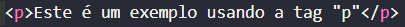
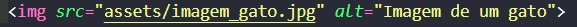
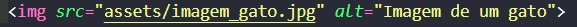

- Arroz
- Feijão
- Óleo

As tags de título no HTML são representadas pela letra "h" seguida de uma numeração que varia de 1 a 6, formando uma hierarquia de importância. A tag "h1" representa o título mais importante da página, geralmente usado para o cabeçalho principal, enquanto "h6" é a menor e menos relevante em termos de destaque visual e semântico. Essa estrutura ajuda na organização do conteúdo, melhora a acessibilidade e também contribui para o SEO (Otimização para Mecanismos de Busca).
Exemplos:
As tags de parágrafo no HTML são representadas pela tag "p", sendo utilizadas para estruturar blocos de texto dentro de uma página. Cada parágrafo criado com "p" é exibido em uma nova linha, garantindo uma organização clara do conteúdo. Essa tag é essencial para a legibilidade do texto, contribuindo para a acessibilidade e a experiência do usuário. Além disso, o uso adequado de "p" facilita o SEO, ajudando os mecanismos de busca a interpretar e indexar melhor o conteúdo da página.
Exemplo:
A tag "hr" no HTML é utilizada para criar uma linha horizontal que separa visualmente diferentes seções do conteúdo. Ela é um elemento de bloco e, por padrão, se estende por toda a largura disponível. Além de ser usada para divisão visual, "hr" também tem um significado semântico, indicando uma mudança de tópico dentro da página.
Exemplo:

A tag "br" no HTML é utilizada para inserir quebras de linha dentro de um texto, sem iniciar um novo parágrafo. Diferente da tag "p", que define blocos de texto separados, "br" é usada quando se deseja apenas pular para a linha seguinte dentro do mesmo contexto. É útil em casos como endereços, poemas ou textos formatados que exigem espaçamentos específicos.
Exemplo:
isso de querer ser
exatamente aquilo
que a gente é
ainda vai
nos levar além
-Paulo Leminski
A tag "ol" no HTML é usada para criar listas ordenadas, onde os itens são organizados em uma sequência lógica e numerada. Por padrão, os elementos dentro de "ol" são exibidos com números, mas é possível personalizar o estilo da numeração com CSS ou o atributo type. Essa tag é útil para listas de instruções, rankings e qualquer conteúdo que siga uma ordem específica.
Exemplo:
A tag "ul" no HTML é utilizada para criar listas não ordenadas, onde os itens são apresentados com marcadores (bullets) ao invés de números. Esse tipo de lista é ideal para agrupar itens sem uma hierarquia definida, como menus, listas de tópicos ou categorias de um site. O estilo dos marcadores pode ser personalizado com CSS.
Exemplo:
A tag "li" representa cada item dentro de uma lista "ul" ou "ol". Cada "li" define um novo elemento da lista e é exibido com um número (quando dentro de "ol") ou com um marcador (quando dentro de "ul"). Essa tag permite a organização eficiente de informações, melhorando a legibilidade e a estrutura do conteúdo.
Exemplos nas imagens acima
A tag "div" no HTML é um elemento de contêiner genérico utilizado para agrupar outros elementos e estruturar o layout de uma página. Ela não tem um estilo visual próprio, mas é essencial para organizar o conteúdo em blocos, facilitando o uso de CSS para estilização e posicionamento. Além disso, o "div" ajuda na criação de seções ou grupos de elementos relacionados, permitindo um controle mais eficiente sobre a estrutura da página.

A tag "input" é usada em formulários para criar campos interativos onde o usuário pode inserir dados. Existem diversos tipos de "input", como texto, senha, email, data e até botões de envio, dependendo do atributo type. Essa flexibilidade torna a tag essencial para a coleta de informações em páginas web, sendo amplamente utilizada para criar formulários dinâmicos e interativos.
Exemplo:
A tag "button" define um botão clicável na página web. É frequentemente usada para realizar ações, como enviar um formulário ou ativar uma função por meio de JavaScript. A tag oferece uma alternativa mais semântica em relação ao uso de elementos como "input type="button"", permitindo que o conteúdo do botão seja mais personalizado (como adicionar ícones ou textos diferentes) e proporcionando melhor acessibilidade.
Exemplo:
A tag "img" é usada para inserir imagens em uma página HTML. Com ela, é possível exibir arquivos de imagem nos formatos mais comuns, como JPEG, PNG e GIF. A tag não tem um conteúdo visível além da imagem, sendo crucial para a inclusão de mídia visual em sites. Atributos como src e alt são importantes para definir a origem da imagem e fornecer uma descrição alternativa para melhorar a acessibilidade.
 
